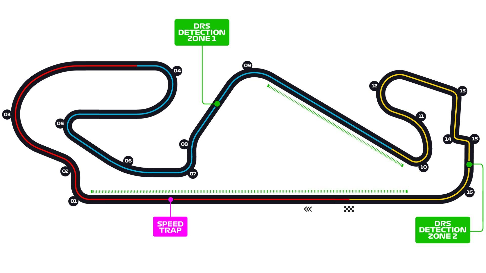
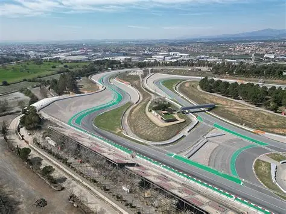
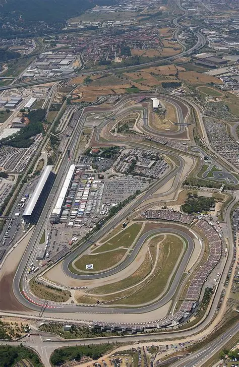

Información del Circuito
Datos generales
Nombre: Circuit de Barcelona-Catalunya
Longitud del circuito: 4657 metros
Anchura media: 12 metros
Fecha: 7 Septiembre
Hora: 14:00H
Número de vueltas: 24
Localidad: Montmeló
País: España
Patrocinador: Alpine
Referencias
- https://www.circuitcat.com/es/
- https://www.motogp.com/es/news/2025/09/02/welcome-to-the-catalan-gp/757885
- https://www.motorsport.com/motogp/results/2025/catalan-gp-654370/
Galería de Fotos



Vídeos
Ganador
Ganador: Álex Márquez
Tiempo: 40:14.093
Clasificación
- 1º Álex Márquez
- 2º Marc Márquez
- 3º Enea Bastianini